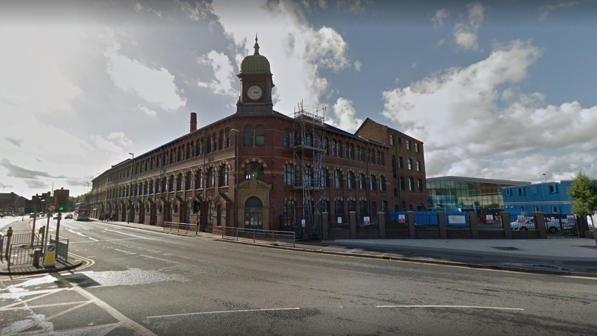

Welcome to Leeds City College Print Works Campus

In September 2013, Leeds City College's brand new Printworks Campus opened on Hunslet Road on the site of the former Alf Cooke Printworks, one of the most recognisable industrial landmarks in Leeds.
The £25 million, state-of-the-art campus now houses specialist vocational subjects, including the Hairdressing & Beauty Therapy, Catering, Hospitality & Food Manufacture provision which relocated from the former Thomas Danby Campus (now closed).
The Printworks Campus offers a full and diverse range of courses in Catering, Hospitality, Bakery, Butchery, Hair and Beauty in levels to suit all abilities and experience: from entry level for those needing a little more support with their learning, through to Level 4 and Apprenticeships.
The facilities have a unique setting within the restored buildings alongside new, 21st century architecture. The Campus is now going through its third phase of developments which includes the conversion and restoration of the large Printhall. This is expected to be completed by September 2017.
The second phase and newly converted Printhall is a modern teaching, learning and recreation space. The three storey building houses state-of-the-art IT and library facilities, student workspaces and flexible learning zones.
The site includes facilities which are open to the public including Hair & Beauty Salons and the Kitchen & Bar restaurant, all run by College students.
Parent Site